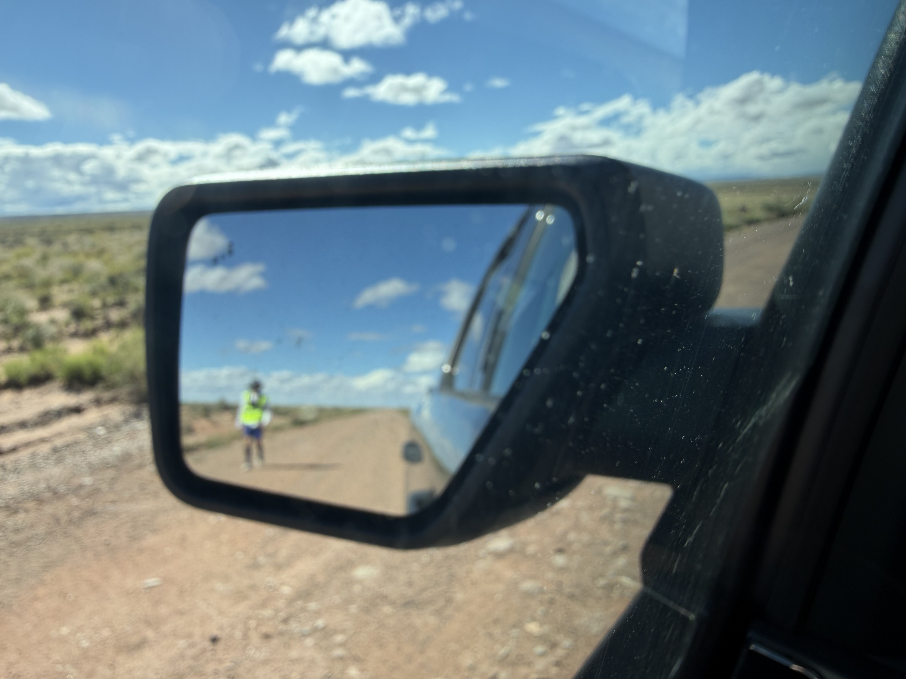
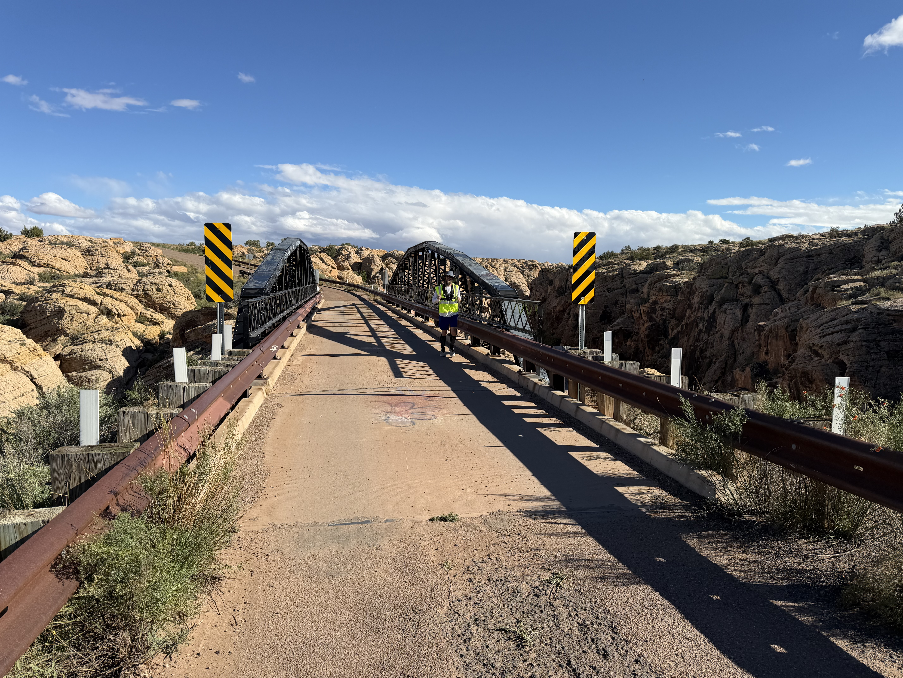
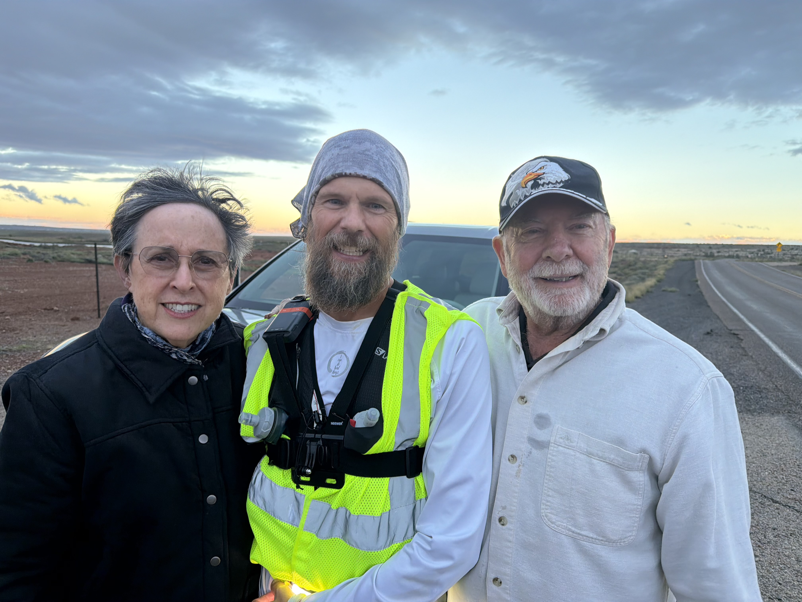

Today consisted of Holbrook to Winslow along some calm and scenic backroads. Many huge solar and wind turbine farms bracketed the road. The weather was much better, slightly cloudy and, of course, windy but not too bad.
The support crew found joy in supplying snacks, warming up spaghetti for lunch, keeping the hydration coming and looking for fun rocks. They found petrified wood!
Allison’s parents tagged along again and were indispensable for the third day in a row. We said goodbye to them in Winslow so they could go home and be awesome there.


